library(tidyverse)10 Advanced linear models - generalized and multilevel
10.1 Lesson preamble
10.1.1 Learning Objectives
Review the major assumptions of simple linear regression and examples of data it’s not appropriate for
Understand the purpose, structure, and assumptions of generalized linear models (GLMs)
Implement GLMs using the
glmpackage and analyze the outputUnderstand the concept of nested or grouped data and limitations to handling it with simple linear regression
Understand the purpose, structure, and assumptions of mixed-effects models (also known as multi-level or hierarchical)
Practice fitting mixed-effects models to data using the
lme4package and evaluating the output
10.2 Generalized linear models (GLMs)
10.2.1 Motivating example
We’re going to look at data from a study where the authors tried to directly measure natural selection. They examined the survival of the bird song sparrows (Melospiza melodia) through multiple years and wanted to relate this to measurements of body parts on the birds, hypothesizing that these physical traits affected the bird’s abilities to procure food.
This dataset specifically looks at survival over the winter in juvenile females. The data contains an entry for each bird, with measurements of beak and body dimensions: body mass (g), wing length, tarsus length, beak length, beak depth, beak width (all in mm), year of birth, and also indicates whether or not they survived (0 = died, 1 = survived). The goal of the study was to understand which physical traits are associated with survival.
Let’s load in the data
sparrow <- read_csv("https://www.zoology.ubc.ca/~bio501/R/data/songsparrow.csv")Rows: 145 Columns: 9
── Column specification ────────────────────────────────────────────────────────
Delimiter: ","
dbl (8): mass, wing, tarsus, blength, bdepth, bwidth, year, survival
lgl (1): sex
ℹ Use `spec()` to retrieve the full column specification for this data.
ℹ Specify the column types or set `show_col_types = FALSE` to quiet this message.sparrow# A tibble: 145 × 9
mass wing tarsus blength bdepth bwidth year sex survival
<dbl> <dbl> <dbl> <dbl> <dbl> <dbl> <dbl> <lgl> <dbl>
1 23.7 67 17.7 9.1 5.9 6.8 1978 FALSE 1
2 23.1 65 19.5 9.5 5.9 7 1978 FALSE 0
3 21.8 65.2 19.6 8.7 6 6.7 1978 FALSE 0
4 21.7 66 18.2 8.4 6.2 6.8 1978 FALSE 1
5 22.5 64.3 19.5 8.5 5.8 6.6 1978 FALSE 1
6 22.9 65.8 19.6 8.9 5.8 6.6 1978 FALSE 1
7 21.9 66.8 19.7 8.6 6 6.7 1978 FALSE 1
8 22.6 65.8 20.5 8.2 5.5 6.8 1978 FALSE 1
9 22.2 63.8 19.3 8.8 5.6 6.5 1978 FALSE 0
10 21.4 62.6 19 8.1 5.7 6.6 1978 FALSE 0
# ℹ 135 more rowssparrow %>% ggplot(aes(x = tarsus, y = survival)) +
geom_point(position = position_jitter(width = 0.05, height = 0.05)) +
geom_smooth(method = lm, se = TRUE) +
scale_y_continuous(breaks = seq(0,1,0.2), limits =c(-0.1,1.1))`geom_smooth()` using formula = 'y ~ x'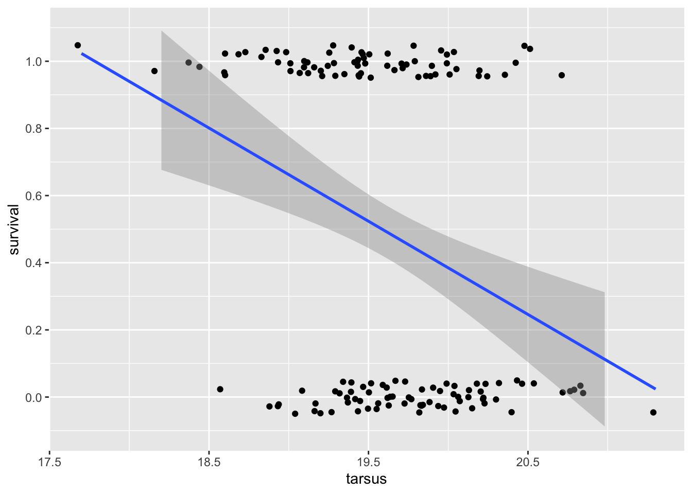
We can see a few problems right away! The Y data is clearly not normally distributed conditional on x: it’s binary. And, the prediction curve suggests that for tarsus lengths over ~21mm survival could be less than zero, and for tarsus less than ~18cm, that it could be greater than 1!
Let’s run the regression just to see more issues
sparrowOutput <- lm(survival ~ tarsus, data = sparrow)
summary(sparrowOutput)
Call:
lm(formula = survival ~ tarsus, data = sparrow)
Residuals:
Min 1Q Median 3Q Max
-0.7734 -0.4403 -0.1626 0.4487 0.8096
Coefficients:
Estimate Std. Error t value Pr(>|t|)
(Intercept) 5.93702 1.34359 4.419 1.95e-05 ***
tarsus -0.27761 0.06844 -4.056 8.17e-05 ***
---
Signif. codes: 0 '***' 0.001 '**' 0.01 '*' 0.05 '.' 0.1 ' ' 1
Residual standard error: 0.4767 on 143 degrees of freedom
Multiple R-squared: 0.1032, Adjusted R-squared: 0.09691
F-statistic: 16.45 on 1 and 143 DF, p-value: 8.17e-05Despite there being a highly-significant relationship between survival and taurus length, it looks like a very small \(R^2\) value. Let’s look at our diagnostic plots:
plot(sparrowOutput)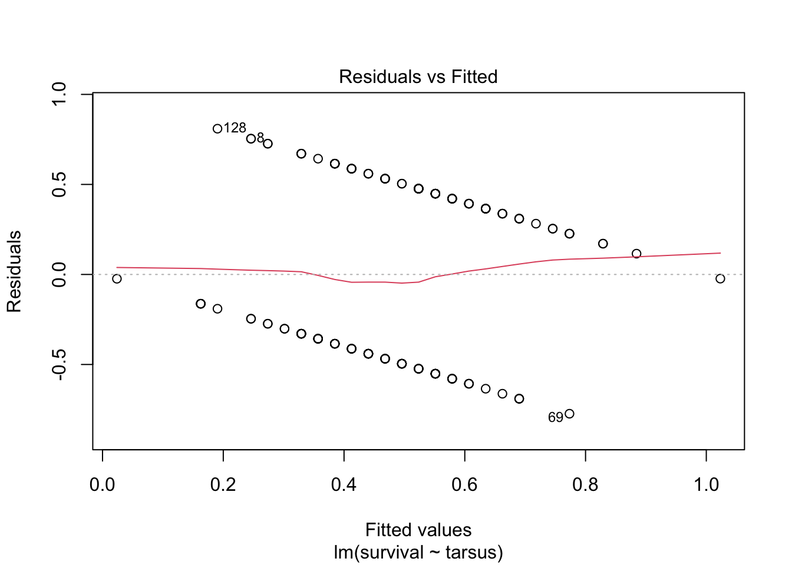
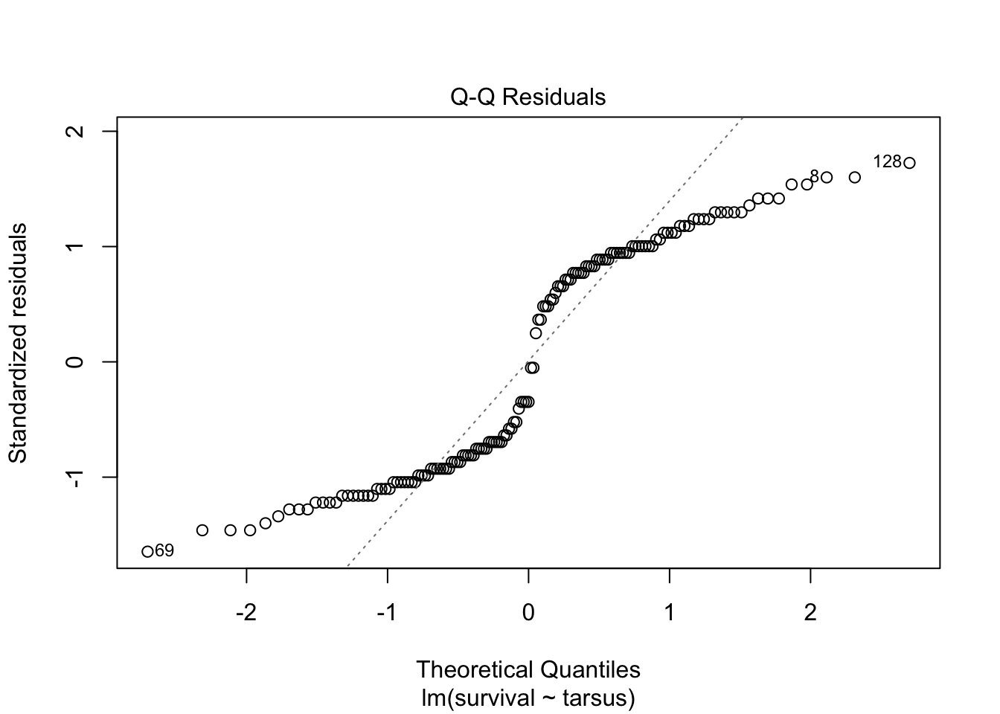
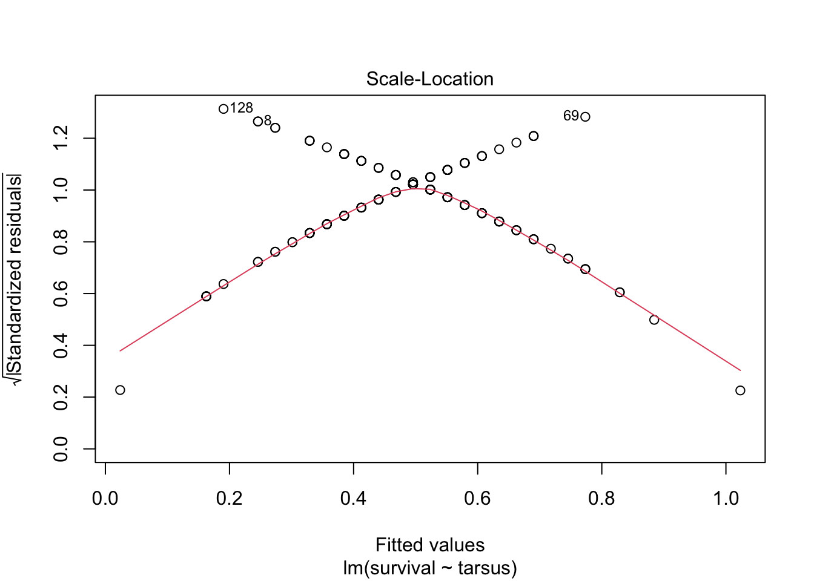
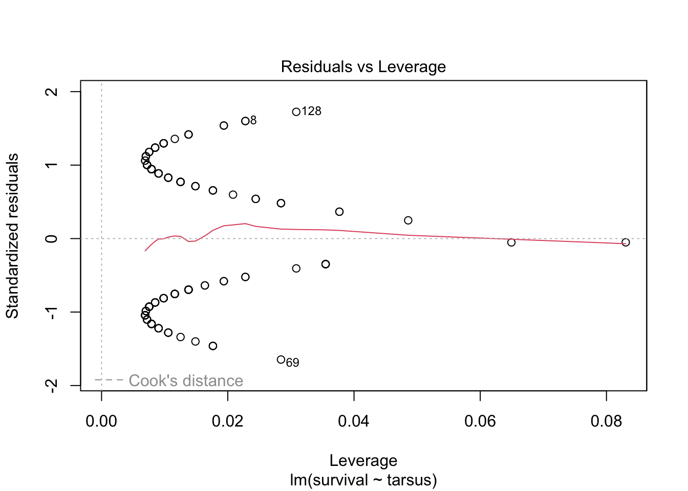
There are some serious violations here!
All of this suggest that this is NOT a case we should be using simple linear regression. We need to find a different type of model that allows for this sort of outcome variable.
10.2.2 Introduction to GLMs
In the last lecture, we saw how linear models can be used to describe relationships between a response variable and predictors when the data is continuous and normally distributed, or can be transformed so that this assumption is not violated.
However, often in biology, we are interested in predicting or explaining variables that violate these assumptions. For example, we might be interested in a binary response (e.g., survival after infection) and how it changes with a continuous predictor (e.g., host age). Or, we might be interested in a count outcome, like how the (integar) number of times a rare event occurs depends on the environment. In these cases we can use a more general form of simple linear regression, called a generalized linear model (GLMs)
You might have heard of logistic regression or Poisson regression before; they are actually just special cases of the more broad framework called generalized linear models.
There are many example types of data we need these models for, such as
Count of the number of individuals or the number of occurrances of an event
Proportions of individuals (or events) with one trait or outcome vs another
Presence/absence of a trait or outcome
Highly-overdispersed quantities (large variance, skewed distributions), such as number of sexual partners
10.2.3 GLMs: structure and assumptions
Similar to simple linear models, GLMs describe how the mean of a response variable changes as a function of the predictors. However, they allow us to work with data that do not satisfy the assumptions required for simple linear regression, including data where
\(Y\) values may not be continuous
Errors are not normally distributed (conditional on predictors \(x\))
Error variance depends on \(x\) or on the mean \(Y\) value
A GLM models the transformed mean of a response variable \(Y_i\) as a linear combination of the predictors \(x_1,\dots,x_p\). The goal of using a GLM is often to estimate how the predictors (e.g., sex and previous exposure to the disease) affect the response (e.g., infection status). The transformation of the response is done using a “link” function \(g(\cdot)\) that is specific to the distribution which used to model the data. Written out, a GLM is of the form
\[g(\mu_i) = \beta_0 + \beta_1 x_{1i} + \cdots \beta_p x_{pi}.\]
The link functions for the Normal, Gamma, Binomial, Poisson, and a few other distributions are known. In general, GLMs apply when the data are modeled using a member of the exponential family. The distributions will have a mean parameter \(\mu\) and, sometimes, a parameter \(\tau\) which characterizes the dispersion around the mean. GLMs are fitted using by maximizing the likelihood function that results from assuming the data arise from a distribution in the exponential family (with a mean and dispersion that depend on the predictors), using using numerical optimization methods.
10.2.4 Interpretation of the effects
Notice that, in a GLM, because the mean of the response been transformed in a particular way, the coefficients must be interpreted carefully. In particular, \(\beta_{j}\) is how a per-unit change in \(x_{j}\) increases or decreases the transformed mean \(g(\mu_i)\).
10.2.5 Challenge
- Think of two example types of biological data that would not satisfy the assumptions of simple linear regression
10.2.6 Example 1: Predicting forest fires (logistic regression)
We’re going to examine a data set on the occurrence of forest fires in Algeria. This data was originally organized and published by Algerian researchers Abid and Izeboudjen, using government data, and was used as with more advanced machine learning models. However, we can do a lot just with linear models! More details on the data, and in particular the code names of the variables, can be found in the original study or on the open-source site for the data.
forest_fires <- read_csv(
"https://raw.githubusercontent.com/das-amlan/Forest-Fire-Prediction/refs/heads/main/forest_fires.csv",
)Rows: 243 Columns: 15
── Column specification ────────────────────────────────────────────────────────
Delimiter: ","
dbl (15): day, month, year, Temperature, RH, Ws, Rain, FFMC, DMC, DC, ISI, B...
ℹ Use `spec()` to retrieve the full column specification for this data.
ℹ Specify the column types or set `show_col_types = FALSE` to quiet this message.forest_fires# A tibble: 243 × 15
day month year Temperature RH Ws Rain FFMC DMC DC ISI BUI
<dbl> <dbl> <dbl> <dbl> <dbl> <dbl> <dbl> <dbl> <dbl> <dbl> <dbl> <dbl>
1 1 6 2012 29 57 18 0 65.7 3.4 7.6 1.3 3.4
2 2 6 2012 29 61 13 1.3 64.4 4.1 7.6 1 3.9
3 3 6 2012 26 82 22 13.1 47.1 2.5 7.1 0.3 2.7
4 4 6 2012 25 89 13 2.5 28.6 1.3 6.9 0 1.7
5 5 6 2012 27 77 16 0 64.8 3 14.2 1.2 3.9
6 6 6 2012 31 67 14 0 82.6 5.8 22.2 3.1 7
7 7 6 2012 33 54 13 0 88.2 9.9 30.5 6.4 10.9
8 8 6 2012 30 73 15 0 86.6 12.1 38.3 5.6 13.5
9 9 6 2012 25 88 13 0.2 52.9 7.9 38.8 0.4 10.5
10 10 6 2012 28 79 12 0 73.2 9.5 46.3 1.3 12.6
# ℹ 233 more rows
# ℹ 3 more variables: FWI <dbl>, Classes <dbl>, Region <dbl>We need to do a little bit of pre-processing on the data first to make our work easier: we’ll select just a few columns we think are most important for fire prediction, and we’ll rename them to more intuitive names
Note that you can actually do renaming as a part of the select function (you don’t need to separately call rename).
forest_fires <- forest_fires %>%
select(
HasFire = Classes,
Temperature,
RelativeHumidity = RH,
WindSpeed = Ws,
Rainfall = Rain
)First, we’ll just use some plots to see if any of these variables seem to differ on days/locations where fires occurred. For example, with temperature:
ggplot(forest_fires, aes(x = Temperature, fill = as.factor(HasFire))) +
geom_density(alpha = 0.7)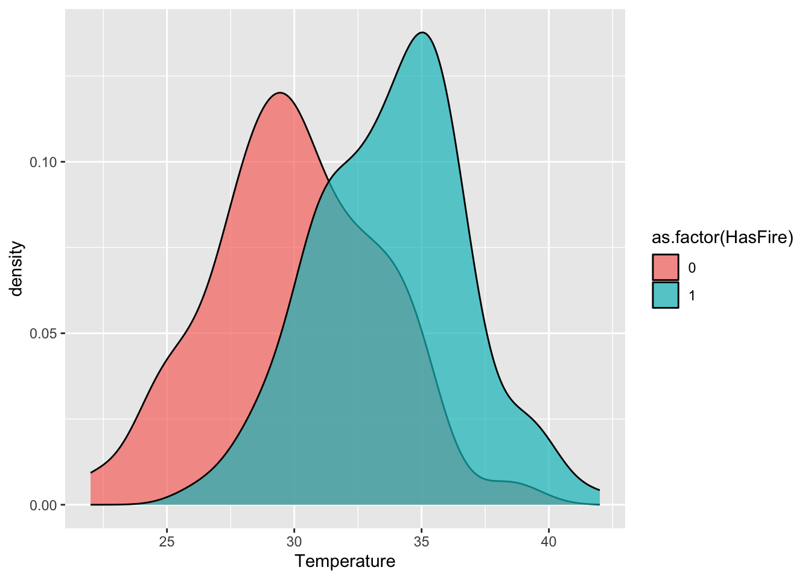
#scale_fill_manual(values = c("No Fire" = "skyblue", "Fire" = "firebrick")) We want to build a predictive model here for the relationship between temperature, relative humidity, wind speed, and rain fall on fire risk. However, like our sparrow data, the outcome here is binary. We CANNOT use a regarul linear model, as this assumes the data are Normal.
In fact, these data are distributed according to a Bernoulli(\(p\)) distribution. This is a member of the exponential family and the type of generalized linear model when the data are distributed in this way (i.e., are binary) is called logistic regression. The idea is that we want to modify our linear regression to instead say - something like - the probability (\(p\)) of a fire is a linear function of the predictors.
The mean of Bernoulli(\(p\)) data is just \(p\), so can we instead just say
\[ p = \beta_0 + \beta_1 x_{1} + \cdots + \beta_p x_{p}?\]
That’s not very helpful, because this would still allow \(p\) to be less than 0 or greater than 1.
Instead, we us different “link” function for \(p\), which is
\[ \text{logit}(p) = \log\frac{p}{1-p}.\]
\(\text{logit}(p)\) is called the log-odds, which can be thought of as a likelihood the response takes on the value one. The great thing about the log-odds is it can vary between \(-\infty\) and \(\infty\) while \(p\) stays between 0 and 1!
In logistic regression, the log-odds ratio is modeled as a linear combination in the predictors:
\[ \text{logit}(p) = \beta_0 + \beta_1 x_{1} + \cdots + \beta_p x_{p}\]
Notice that increasing \(x_j\) by one unit results in change \(\beta_j\) to the link-transformed response. This is how the effect sizes are interpreted for GLMs such as this one.
How let’s re-fit our data using a GLM!
model_ws <- glm(HasFire ~ WindSpeed,
data = forest_fires,
family = binomial(link = "logit")
)
summary(model_ws)
Call:
glm(formula = HasFire ~ WindSpeed, family = binomial(link = "logit"),
data = forest_fires)
Coefficients:
Estimate Std. Error z value Pr(>|z|)
(Intercept) 1.03997 0.73404 1.417 0.157
WindSpeed -0.05049 0.04650 -1.086 0.278
(Dispersion parameter for binomial family taken to be 1)
Null deviance: 332.90 on 242 degrees of freedom
Residual deviance: 331.71 on 241 degrees of freedom
AIC: 335.71
Number of Fisher Scoring iterations: 4Let’s examine the key components of the model summary:
Coefficients:
– The intercept (1.03997) represents the log-odds of a fire when wind speed is zero
– The WindSpeed coefficient (-0.05049) indicates that for each unit increase in wind speed, the log-odds of a fire decrease by 0.05049
– The p-values (Pr(>|z|)) suggest neither coefficient is statistically significant at the α=0.05 levelNull vs. Residual Deviance:
– Null deviance (332.90) represents model fit with just an intercept
– Residual deviance (331.71) represents fit after adding WindSpeed
– The small difference suggests WindSpeed adds little predictive powerAIC (335.71):
– Used for model comparison, lower values indicate better models
– By itself, this number isn’t meaningful, but we’ll use it to compare with more complex models
This fit suggests that this is not a good model; wind speed is not a useful predictor of fire!!
Remember, since the coefficients are log odds, we can convert them to just odds by exponentiating:
\[ \textrm{odds}=e^{β0+β1x} \]
exp(cbind(OddsRatio = coef(model_ws), confint(model_ws)))Waiting for profiling to be done... OddsRatio 2.5 % 97.5 %
(Intercept) 2.8291328 0.6791640 12.28138
WindSpeed 0.9507633 0.8664001 1.04093We can see that the odds of a fire occurring are 0.95. In other words, for every unit increase in wind speed, the odds of a fire remain relatively constant (95% of the previous odds).
Let’s make a plot to try to visualize our results
ws_range <- seq(min(forest_fires$WindSpeed), max(forest_fires$WindSpeed), length.out = 100)
predicted_probs <- predict(model_ws, newdata = data.frame(WindSpeed = ws_range), type = "response")
predicted_data <- data.frame(WindSpeed = ws_range, probability = predicted_probs)# Convert Classes back to 0/1 for plotting the raw data points
#forest_fires$class_numeric <- as.numeric(forest_fires$HasFire) - 1
ggplot(predicted_data, aes(x = WindSpeed, y = probability)) +
geom_line(color = "blue", linewidth = 1.5) +
geom_point(
data = forest_fires,
aes(x = WindSpeed, y = HasFire, color = as.factor(HasFire)),
position = position_jitter(width = 0.1, height = 0.1),
alpha = 0.7
) +
#scale_color_manual(values = c("No Fire" = "skyblue", "Fire" = "firebrick")) +
labs(
title = "Logistic Regression Curve for Wind Speed",
x = "Wind Speed (km/h)",
y = "Probability of Fire"
) 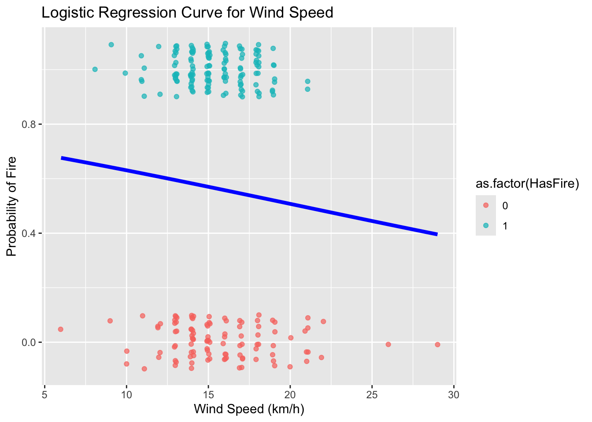
Now, let’s try to improve our model by incorporating temperature, relative humidity, and rainfall
model_2 <- glm(HasFire ~ Rainfall + RelativeHumidity + Temperature,
data = forest_fires,
family = binomial(link = "logit")
)Warning: glm.fit: fitted probabilities numerically 0 or 1 occurredsummary(model_2)
Call:
glm(formula = HasFire ~ Rainfall + RelativeHumidity + Temperature,
family = binomial(link = "logit"), data = forest_fires)
Coefficients:
Estimate Std. Error z value Pr(>|z|)
(Intercept) -5.49046 2.87716 -1.908 0.0564 .
Rainfall -2.45730 0.54778 -4.486 7.26e-06 ***
RelativeHumidity -0.04126 0.01604 -2.573 0.0101 *
Temperature 0.28463 0.07146 3.983 6.81e-05 ***
---
Signif. codes: 0 '***' 0.001 '**' 0.01 '*' 0.05 '.' 0.1 ' ' 1
(Dispersion parameter for binomial family taken to be 1)
Null deviance: 332.90 on 242 degrees of freedom
Residual deviance: 196.53 on 239 degrees of freedom
AIC: 204.53
Number of Fisher Scoring iterations: 7The improved model shows several key features:
Temperature Effect:
– Positive coefficient indicates higher temperatures increase fire probability
– For each 1°C increase in temperature, the log odds of fire increase
– This relationship makes ecological sense as higher temperatures tend to create conditions conducive to firesRelative Humidity Effect:
– Negative coefficient shows higher humidity reduces fire probability
– Each 1% increase in humidity decreases the log odds of fire
– This aligns with our understanding that moist conditions inhibit fire spreadRainfall Effect:
– Strong negative relationship with fire probability
– Even small amounts of rainfall significantly reduce fire odds
– This direct measure of precipitation complements the humidity effect
Looking at the odds ratios, we can interpret the effects of each predictor:
Temperature: For each 1°C increase in temperature, the odds of fire increase by 32% (OR = 1.32, 95% CI: 1.14-1.56)
Relative Humidity: Each 1% increase in humidity reduces the odds of fire by about 4% (OR = 0.96, 95% CI: 0.93-0.99)
Rainfall: The odds ratio of 0.087 indicates that each mm of rainfall reduces the odds of fire by about 91% (1 – 0.087 = 0.913). This strong negative effect makes ecological sense as wet conditions significantly inhibit fire occurrence
Visualizing the effects of multiple predictors in logistic regression can be challenging because the relationship between each predictor and the response depends on the values of other predictors. The plots below, generated using the ggeffects package, show the marginal effects of each predictor while holding other variables at their mean or reference values:
library(ggeffects)ggeffects::ggeffect(model_2) %>%
plot() $Rainfall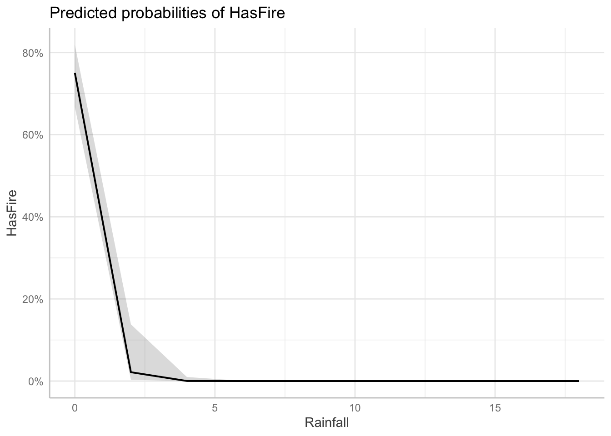
$RelativeHumidity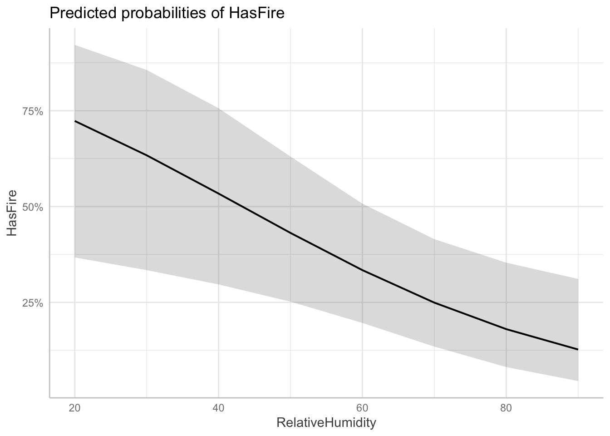
$Temperature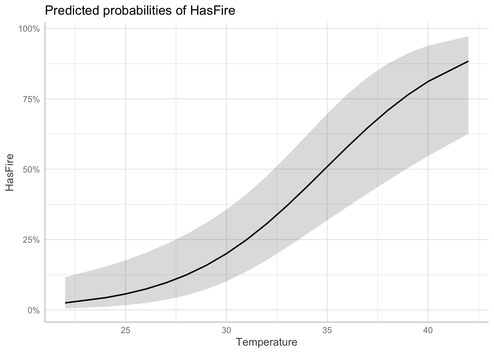
To demonstrate the practical application of our model, we can create an example environmental condition and evaluate the risk of fire
scenarios <- data.frame(
Rainfall = 10,
Temperature = 20,
RelativeHumidity = 50
)
# Predict probabilities
scenarios$Fire_Probability <- predict(model_2, newdata = scenarios, type = "response")
# Display the scenarios and their predicted probabilities
scenarios %>%
mutate(Fire_Probability = scales::percent(Fire_Probability, accuracy = 0.1)) Rainfall Temperature RelativeHumidity Fire_Probability
1 10 20 50 0.0%10.2.7 Challenge
Can you update your analysis of the sparrow survival data to use a logistic regression instead?
10.3 More examples:
There are many great tutorials on fitting GLMs in R for different sorts of datasets that require different types of link functions. We suggest you go through some of these examples on your own to gain more experience with fitting these models. Here are a few we suggest
The EEB R Manual has an example fitting species richness (e.g., number of species, a positive, skewed variable) in grasslands to environments characteristics (data originally published in Crawley, 2005) using Poisson link functions
The e-book “Statistical Modeling in R” by Valletta and McKinley has an nice example related to the begging rate of cuckoo bird chicks which also uses a Poisson regression
The textbooks suggested in the Further Reading section also have lots of examples
11 Mixed-Effects Models
(Also known as multi-level models or hierarchical models)
We’re going to switch gears now to discuss another common situation we find ourselves in with data in the biological sciences which makes regular linear regression not ideal. We’ll learn that we can handle this kind of data with another extension to regular linear regression.
11.0.1 Hierarchical Data Structures
In biological research, data often exhibit natural hierarchical structures. For example:
Students within Classes within Schools within Districts
Individuals within Populations within Species
Repeated Measurements within Individuals within Populations
Patients treated by Physicians with Hospitals within Provinces
These hierarchical structures can be either nested or crossed:

In nested structures (right), each lower-level unit belongs to only one higher-level unit. For example, each student belongs to only one class, and each class belongs to only one school. In crossed structures (left), lower-level units can belong to multiple higher-level units. For example, a student might take multiple classes, and a teacher might teach multiple classes.
11.0.2 Motivating example: Simpson’s Paradox
Simpson’s Paradox is a statistical phenomenon where a trend appears in different groups of data but disappears or reverses when the groups are combined. This is particularly relevant in ecological studies where data are often nested or grouped. Consider the following example using the Palmer Penguins dataset:
#install(palmerpenguins)
library(palmerpenguins)
Attaching package: 'palmerpenguins'The following objects are masked from 'package:datasets':
penguins, penguins_raw# Plot
model_penguins <- lm(bill_depth_mm ~ bill_length_mm, data = penguins %>% drop_na())
penguins %>%
drop_na() %>%
mutate(
predicted = predict(model_penguins)
) %>%
ggplot(aes(x = bill_length_mm, y = bill_depth_mm, color = species)) +
geom_point() +
geom_smooth(method = "lm", se = FALSE) +
geom_abline(
intercept = coef(model_penguins)[1],
slope = coef(model_penguins)[2],
color = "black" ) +
labs(
title = "Demonstration of Simpson's Paradox",
x = "Bill Length (mm)",
y = "Bill Depth (mm)",
color = "Species"
)`geom_smooth()` using formula = 'y ~ x'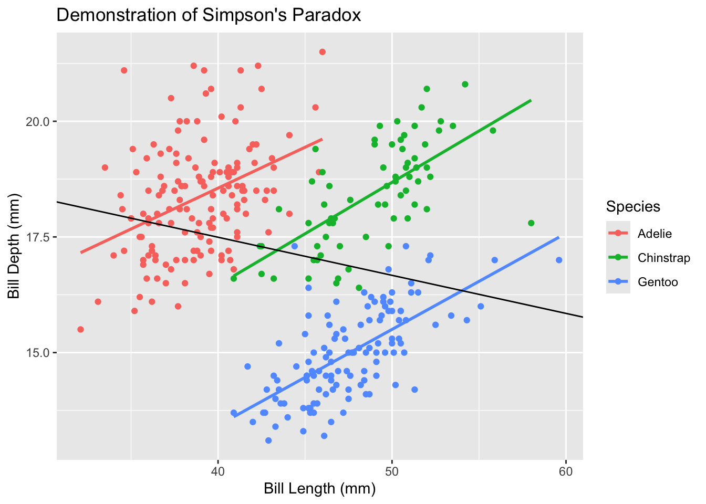
In this example, when we fit a simple linear regression to all penguins (black line), we see a positive relationship between bill length and bill depth. However, when we look at each species separately (colored lines), we see negative relationships. This apparent contradiction is Simpson’s Paradox, and it occurs because species is a confounding variable that affects both bill length and bill depth.
Whereas traditional linear models will overlook the underlying trends within data hierarchy, linear mixed effects models are designed to incorporate them.
11.0.3 Model Structure
A traditional linear model can be written as:
\[yi=β_0+β_1 x_i+ϵ_ i\]
where:
\(y_i\) is the response variable for observation i
\(β_0\) is the intercept
\(β_1\) is the slope coefficient
\(x_i\) is the predictor variable
\(ϵ_i\) is the residual error
A linear mixed effects model extends this by adding group (or “random”) effects:
\[ y_{ij}=β_0+β_1 x_{ij}+u_j+ϵ_{ij} \]
where:
\(y_{ij}\) is the response variable for observation i in group j
\(x_{ij}\) is the predictor variable for observation i in group j
\(u_j\) is the group/random effect for group j
\(ϵ_{ij}\) is the residual error for observation i in group j
There are two ways to think about the key difference here vs regular linear regresion.
One way to think about it is that the error term is now split into two components: the group/random effect \(u_j\) and the residual error \(ϵ_{ij}\). This decomposition allows us to model both systematic variation (through group/random effects) and residual variation separately. Just like we assume a (normal) distribution of the individual residual variation $$, we also assume that the group/random effects for each group come from a larger distribution, and that the particular groups we aobserve are simply random samples of all possible groups we could have observed. This way of thinking about it is why many people call these random effects
Another way to think about it is that the mean response now varies across individuals due to two types of predictors: there group membership \(j\), which increases the mean by \(u_j\), and their individual predictors \(x_i\), which increase the mean by \(β_1 x_{ij}\). This way of thinking about it is why many people call these group effects
11.0.4 Advantages of Linear Mixed Effects Models
LME models offer several advantages over traditional linear models:
Handling Nested Data: LME models naturally account for hierarchical structures in data, such as multiple measurements within individuals or sites within regions.
Relaxed Independence Assumption: Traditional linear models assume all observations are independent. LME models allow for correlation within groups through random effects.
Partial Pooling: LME models balance between complete pooling (treating all data as one group) and no pooling (treating each group separately). This is particularly useful when some groups have few observations.
Flexible Error Structures: LME models can accommodate various types of correlation structures within groups, making them suitable for repeated measures and longitudinal data.
11.0.5 Remaining Assumptions and Limitations
While LME models are more flexible than traditional linear models, they still have important assumptions:
Normality: Both random effects and residuals are assumed to follow normal distributions.
Linear Relationships: The relationship between predictors and the response variable should be linear.
Homogeneity of Variance: While LME models can handle some heteroscedasticity through random effects, they still assume constant variance within groups.
Random Effects Structure: The random effects structure must be correctly specified. This requires careful consideration of the hierarchical structure in your data.
Limitations include:
Computational Complexity: LME models can be computationally intensive, especially with many random effects or complex correlation structures.
Sample Size Requirements: While LME models can handle unbalanced designs, they still require sufficient observations at each level of the hierarchy. If this requirement is not met, we will encounter overfitting, or the model will be unable to converge on a solution.
Interpretation Challenges: The presence of both fixed and random effects can make model interpretation more complex than traditional linear models.
11.1 Example: Species Richness in Intertidal Areas
We’ll explore LME models using the RIKZ dataset, which examines species richness in intertidal areas. This original study is here. The data structure is hierarchical: multiple sites within each beach, with abiotic variables measured at each site.
The RIKZ dataset contains the following variables:
Richness: The number of species found at each site
NAP: Normal Amsterdams Peil, a measure of height relative to mean sea level
Beach: A factor identifying each beach (1-9)
Site: A factor identifying each site within a beach (1-5)
11.1.1 Data Preparation
First, let’s load and prepare our data:
library(lme4) # for linear mixed effects modelsLoading required package: Matrix
Attaching package: 'Matrix'The following objects are masked from 'package:tidyr':
expand, pack, unpacklibrary(lmerTest) # load in to get p-values in linear mixed effects models
Attaching package: 'lmerTest'The following object is masked from 'package:lme4':
lmerThe following object is masked from 'package:stats':
steplibrary(broom.mixed) # for tidy output from linear mixed effects models
# Load the RIKZ dataset
rikz <- read_tsv("https://uoftcoders.github.io/rcourse/data/rikz_data.txt")Rows: 45 Columns: 5── Column specification ────────────────────────────────────────────────────────
Delimiter: "\t"
dbl (5): Richness, Exposure, NAP, Beach, Site
ℹ Use `spec()` to retrieve the full column specification for this data.
ℹ Specify the column types or set `show_col_types = FALSE` to quiet this message.# Site and Beach are factors
rikz <- rikz %>%
mutate(
Site = factor(Site),
Beach = factor(Beach)
)
str(rikz)tibble [45 × 5] (S3: tbl_df/tbl/data.frame)
$ Richness: num [1:45] 11 10 13 11 10 8 9 8 19 17 ...
$ Exposure: num [1:45] 10 10 10 10 10 8 8 8 8 8 ...
$ NAP : num [1:45] 0.045 -1.036 -1.336 0.616 -0.684 ...
$ Beach : Factor w/ 9 levels "1","2","3","4",..: 1 1 1 1 1 2 2 2 2 2 ...
$ Site : Factor w/ 5 levels "1","2","3","4",..: 1 2 3 4 5 1 2 3 4 5 ...The data contains 45 observations across 9 beaches, with 5 sites per beach. We’ve encoded ‘Beach’ as a factor to facilitate its use as a group/random effect.

11.1.2 Initial Linear Regression
Let’s start with a simple linear regression to examine the relationship between species richness and NAP, pooling data across all beaches:
lm_base <- lm(Richness ~ NAP, data = rikz)
summary(lm_base)
Call:
lm(formula = Richness ~ NAP, data = rikz)
Residuals:
Min 1Q Median 3Q Max
-5.0675 -2.7607 -0.8029 1.3534 13.8723
Coefficients:
Estimate Std. Error t value Pr(>|t|)
(Intercept) 6.6857 0.6578 10.164 5.25e-13 ***
NAP -2.8669 0.6307 -4.545 4.42e-05 ***
---
Signif. codes: 0 '***' 0.001 '**' 0.01 '*' 0.05 '.' 0.1 ' ' 1
Residual standard error: 4.16 on 43 degrees of freedom
Multiple R-squared: 0.3245, Adjusted R-squared: 0.3088
F-statistic: 20.66 on 1 and 43 DF, p-value: 4.418e-05Okay, we observe a general linear decrease.
ggplot(rikz, aes(x = NAP, y = Richness)) +
geom_point() +
geom_smooth(method = "lm") +
theme_classic()`geom_smooth()` using formula = 'y ~ x'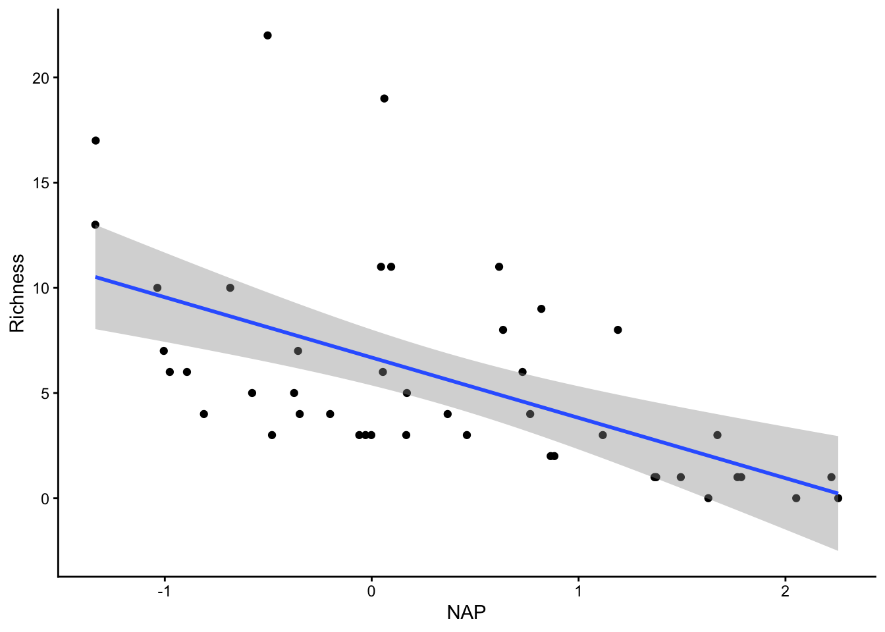
Let’s look at our diagnostic plots!
plot(lm_base)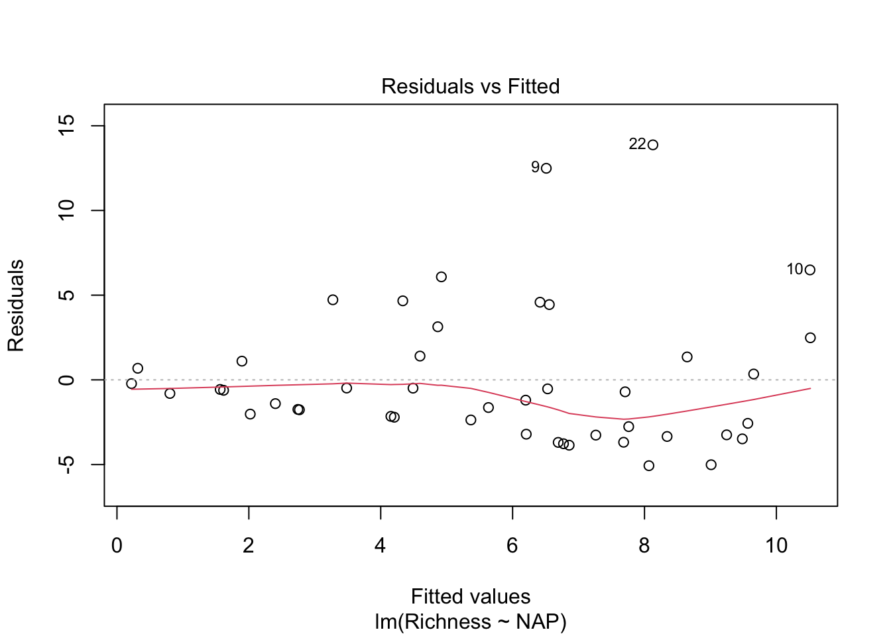
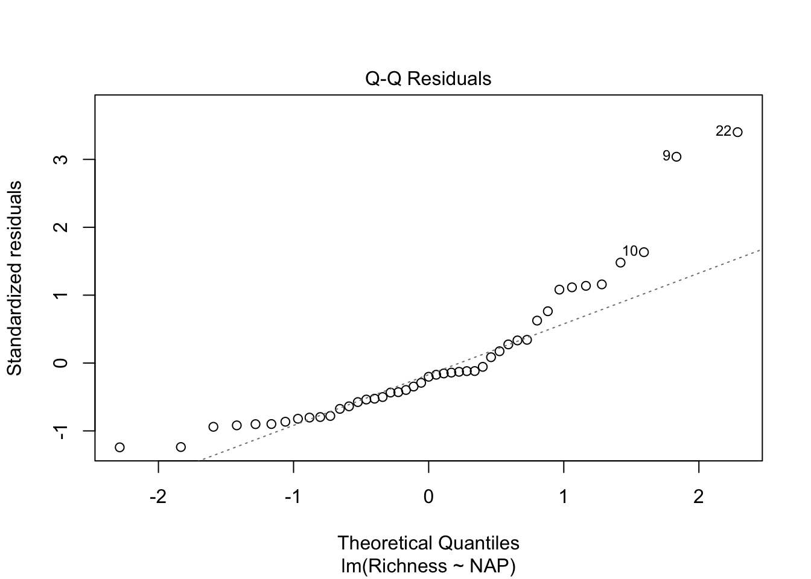
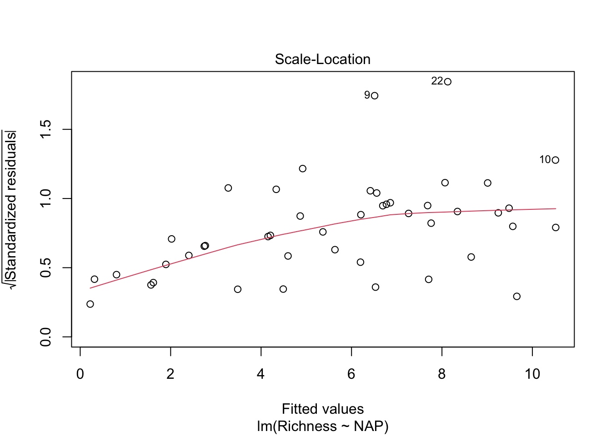
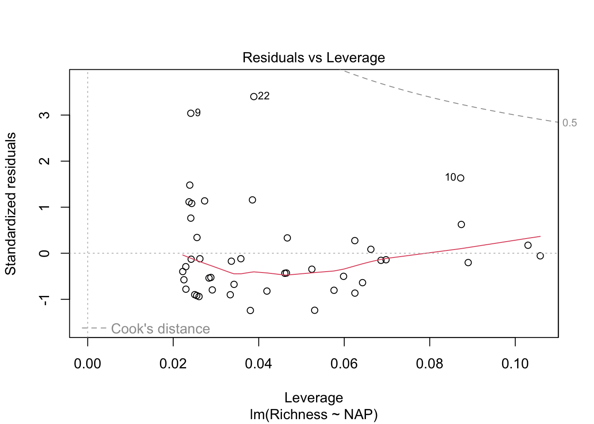
Overall, things don’t look terrible, but they’re not ideal, and our \(R^2\) wasn’t that great either. Is it possible to get a better model? What if there are different trends across beaches? And, doesn’t the fact that the data are clustered into these beaches violate one of our main assumptions about independence of the samples? (In addition to liokely to contributing to non-normally-distributed errors)
We could try to solve this by just fitting separately for each beach (like we tried last lecture with our sexual dimorphism dataset and the Order)
# We could account for non-independence by running a separate analysis
# for each beach
ggplot(rikz, aes(x = NAP, y = Richness)) +
geom_point() +
geom_smooth(method = "lm") +
facet_wrap(~ Beach)`geom_smooth()` using formula = 'y ~ x'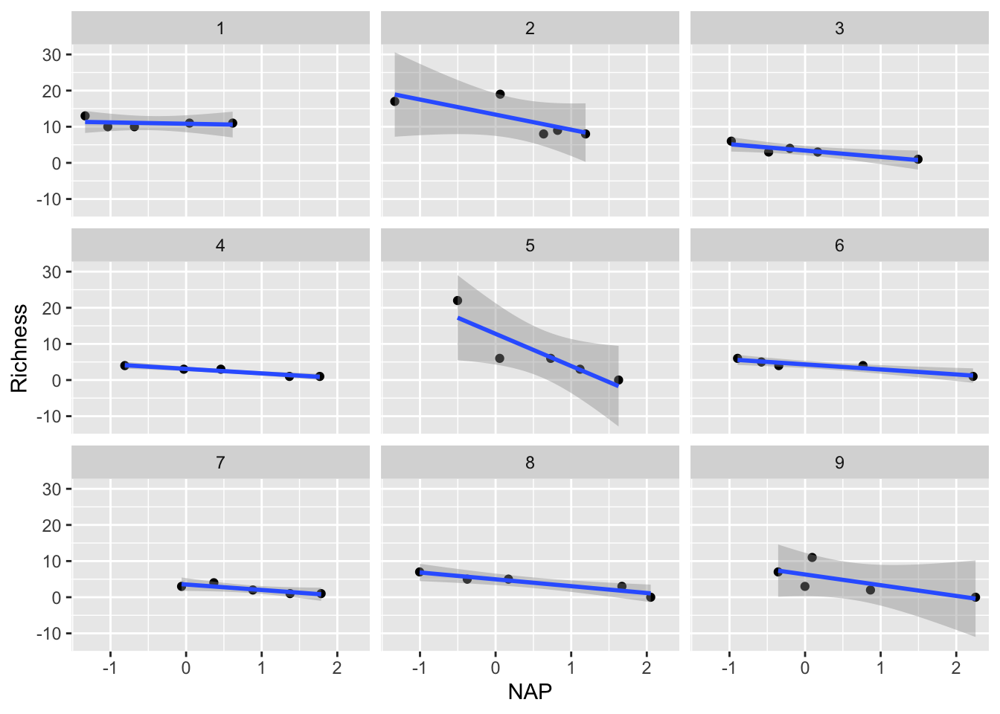
We could examine the coefficients by running each of these regressions and examining the output. Similarly, we could consider just adding Beach as a predictor variable in our regular linear regression, and examine the interaction of NAP with Beach.
11.1.3 Challenge
Include the beach site as an additional predictor in a regular linear regression model and interpret the output
HOWEVER, there are a few major limitations with these approaches
We would find that each analysis would now only have around 5 points (a really low sample size!), leading to a lot of uncertainty in our estimates
We would have to run multiple significance tests. As such, we run the risk of obtaining spuriously significant results purely by chance.
We probably don’t really care about the differences between beaches! We are most interested in the effect of NAP. These beaches were a random subset of all beaches that could have been chosen, so their individual effects aren’t so interesting, but we still need to account for the non-independence of observations within beaches.
For all these reasons, a mixed-effect/multi-level model is most useful!
11.1.4 Group-specific intercept model
Let’s formally use a mixed-effect model to allow for every beach to have its own intercept in the model. We could call this a “group effect” on intercept, or a “random” intercept.
In R’s formula notation, this is specified as:
library(lme4)
library(lmerTest)
# Random intercept model with NAP as fixed effect and Beach
# as random effect
mixed_model_IntOnly <- lmer(Richness ~ NAP + (1|Beach),
data = rikz, REML = FALSE)The model formula includes:
- Fixed Effects:
NAP(the main predictor)
Random Effects:
(1 | Beach)specifies random intercepts for each beachBeachis our grouping variableThe
|separates the random effects from the grouping variable.The
1indicates we’re only modeling random intercepts
Let’s examine the model summary output
summary(mixed_model_IntOnly)Linear mixed model fit by maximum likelihood . t-tests use Satterthwaite's
method [lmerModLmerTest]
Formula: Richness ~ NAP + (1 | Beach)
Data: rikz
AIC BIC logLik -2*log(L) df.resid
249.8 257.1 -120.9 241.8 41
Scaled residuals:
Min 1Q Median 3Q Max
-1.4258 -0.5010 -0.1791 0.2452 4.0452
Random effects:
Groups Name Variance Std.Dev.
Beach (Intercept) 7.507 2.740
Residual 9.111 3.018
Number of obs: 45, groups: Beach, 9
Fixed effects:
Estimate Std. Error df t value Pr(>|t|)
(Intercept) 6.5844 1.0321 9.4303 6.380 0.000104 ***
NAP -2.5757 0.4873 38.2433 -5.285 5.34e-06 ***
---
Signif. codes: 0 '***' 0.001 '**' 0.01 '*' 0.05 '.' 0.1 ' ' 1
Correlation of Fixed Effects:
(Intr)
NAP -0.164Fixed Effects: Shows the estimated coefficients for NAP and the intercept, along with their standard errors and p-values
Random Effects: Shows the variance and standard deviation of the random intercepts for Beach and the residual variance
Number of Observations: Shows the total number of observations and the number of groups (beaches)
Let’s visualize the model’s predictions amid the current data:
# Let's predict values based on our model and add these to our dataframe
# These are the fitted values for each beach, which are modelled separately.
rikz$fit_InterceptOnly <- predict(mixed_model_IntOnly)
# Let's plot the
ggplot(rikz, aes(x = NAP, y = Richness, colour = Beach)) +
# Add fixed effect regression line (i.e. NAP)
geom_abline(aes(intercept = `(Intercept)`, slope = NAP),
size = 2,
as.data.frame(t(fixef(mixed_model_IntOnly)))) + # extracts estimates
# Add fitted values (i.e. regression) for each beach
geom_point(size = 3) +
geom_line(aes(y = fit_InterceptOnly), size = 1)Warning: Using `size` aesthetic for lines was deprecated in ggplot2 3.4.0.
ℹ Please use `linewidth` instead.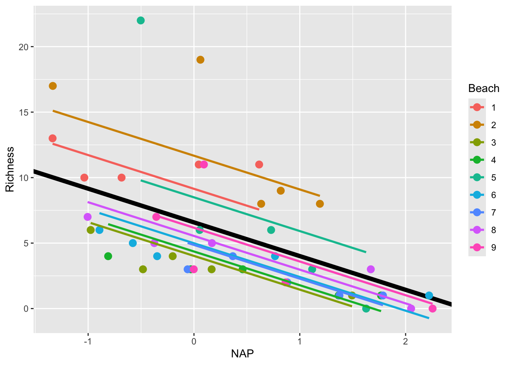
This is a step in the right direction!
However, this model still makes the assumption that the slope describing the relationship between Richness and NAP is the same for all beaches. Is this really the case? Let’s plot each beach separately to see
ggplot(rikz, aes(x = NAP, y = Richness)) +
geom_point() +
geom_smooth(method = "lm", se = FALSE) +
facet_wrap(~Beach)`geom_smooth()` using formula = 'y ~ x'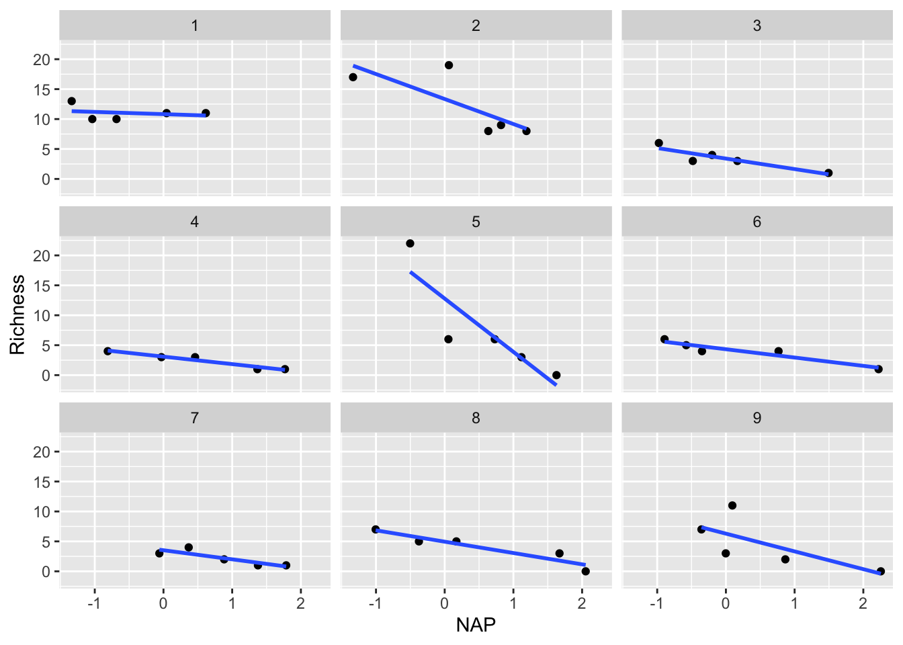
Indeed, it appears that the relationship differs drastically for certain beaches (i.e. compare Beach 1 with Beach 5). This can be solved by going one step further by introducing random slopes to our model.
11.1.5 Random Intercepts and Slopes Model
We can extend our model to include random slopes, allowing the relationship between NAP and species richness to vary by beach. In R’s formula notation, this is specified as:
mixed_model_IntSlope <- lmer(Richness ~ NAP + (1 + NAP|Beach),
data = rikz, REML = FALSE)boundary (singular) fit: see help('isSingular')The model formula now includes:
Fixed Effects: NAP (the main predictor)
Random Effects: (NAP | Beach) specifies both random intercepts and slopes for NAP by Beach
NAPbefore the|indicates we’re modeling random slopes for NAP.As in regular models, the
1representing the intercept is implied and not written out.0 + NAPwould be necessary to specify only the random slopes without a random intercept for this grouping variable.The
|separates the random effects from the grouping variableBeachis our grouping variable
Let’s look at the output
summary(mixed_model_IntSlope)Linear mixed model fit by maximum likelihood . t-tests use Satterthwaite's
method [lmerModLmerTest]
Formula: Richness ~ NAP + (1 + NAP | Beach)
Data: rikz
AIC BIC logLik -2*log(L) df.resid
246.7 257.5 -117.3 234.7 39
Scaled residuals:
Min 1Q Median 3Q Max
-1.7985 -0.3418 -0.1827 0.1749 3.1389
Random effects:
Groups Name Variance Std.Dev. Corr
Beach (Intercept) 10.949 3.309
NAP 2.502 1.582 -1.00
Residual 7.174 2.678
Number of obs: 45, groups: Beach, 9
Fixed effects:
Estimate Std. Error df t value Pr(>|t|)
(Intercept) 6.5818 1.1883 8.8936 5.539 0.000377 ***
NAP -2.8293 0.6849 7.9217 -4.131 0.003366 **
---
Signif. codes: 0 '***' 0.001 '**' 0.01 '*' 0.05 '.' 0.1 ' ' 1
Correlation of Fixed Effects:
(Intr)
NAP -0.810
optimizer (nloptwrap) convergence code: 0 (OK)
boundary (singular) fit: see help('isSingular')Note the warning message: “boundary (singular) fit: see help(‘isSingular’)”.
This occurs when the model is overfitted or when there’s not enough variation in the data to estimate all the random effects. In this case, it suggests that the random slopes & intercepts model might be too complex for our data.
Despite this, let’s plot the results
rikz$fit_IntSlope <- predict(mixed_model_IntSlope)
ggplot(rikz, aes(x = NAP, y = Richness, colour = Beach)) +
geom_abline(aes(intercept = `(Intercept)`, slope = NAP),
size = 2,
as.data.frame(t(fixef(mixed_model_IntSlope)))) +
geom_line(aes(y = fit_IntSlope), size = 1) +
geom_point(size = 3) 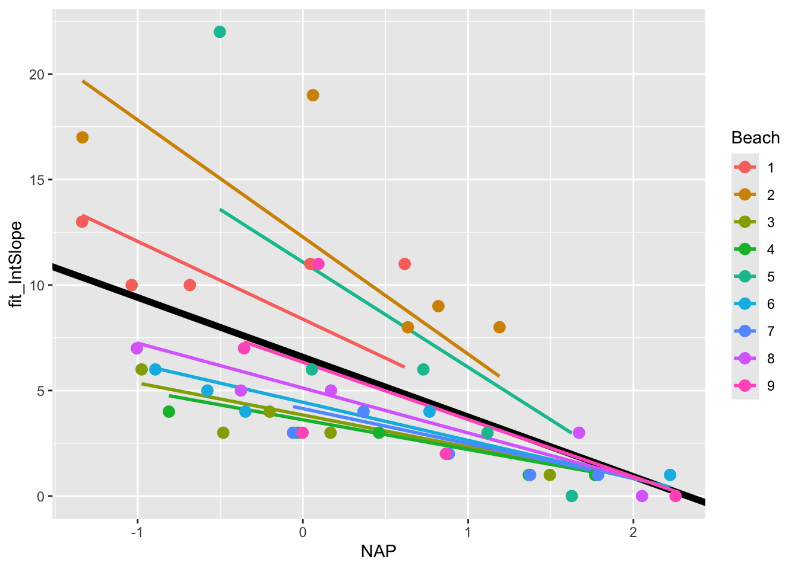
11.2 Further reading
The EEB R Manual
The e-book “Statistical Modeling in R” by Valletta and McKinley
The R Book, by Michael Crawley (2nd addition available online via U of T library)
Linear Models in R, by Julian James Faraway (Chapman & Hall, 2025), and the follow-up Extending the linear model with R : generalized linear, mixed effects and nonparametric regression models (1st additions available online via U of T library, datasets and other resources available here)